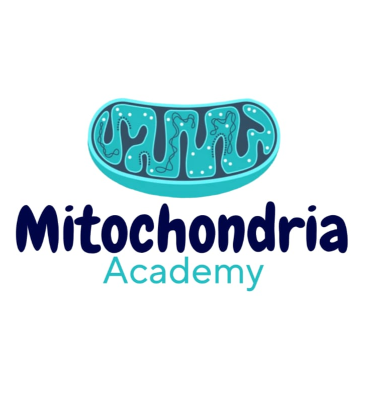
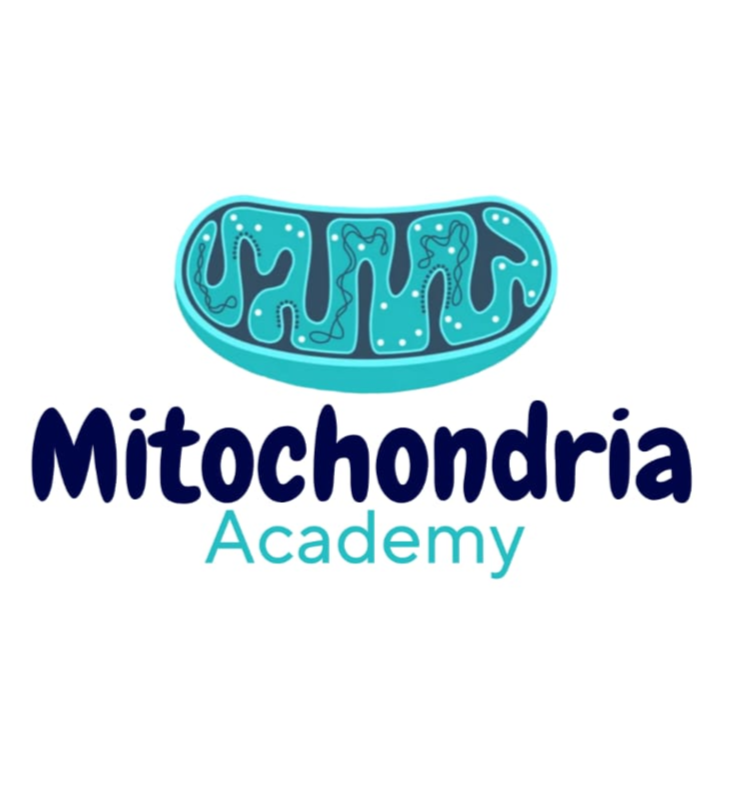

LinkedIn: From Zero to Professional
A complete presentation to help you understand LinkedIn, why it matters, and how to build a professional profile that stands out in today’s job market.
Table of Contents
- 1️⃣ What is LinkedIn?
- 2️⃣ Why is LinkedIn important for students?
- 3️⃣ LinkedIn vs Social Media
- 4️⃣ LinkedIn vs Traditional CV
- 5️⃣ How to enhance your LinkedIn profile
- 6️⃣ Contact Information
What is LinkedIn?
- ✅ The largest professional networking platform worldwide.
- ✅ Focused on careers, skills, and professional growth.
- ✅ Allows you to build a digital profile that acts as a living resume.
- ✅ Connects students, professionals, and companies in one ecosystem.
Why is LinkedIn Important for Students?
- 🎯 Access to internships and entry-level opportunities.
- 🎯 Build a professional network early while still at university.
- 🎯 Learn from industry leaders and join communities.
- 🎯 Showcase more than grades: projects, volunteering, and achievements.
LinkedIn vs Social Media
- 📱 Facebook, Instagram, and TikTok are built for fun.
- 💼 LinkedIn is designed for professional branding and career growth.
- 🌍 Networking here is about jobs, skills, and opportunities, not likes or trends.
- 📈 Employers actively search for candidates on LinkedIn, not on Instagram.
LinkedIn vs Traditional CV
- 📄 A CV is static — once sent, it cannot be updated.
- 🌐 LinkedIn is dynamic — you can continuously update experiences and skills.
- ⭐ Includes recommendations, and proof of work.
- 🤝 Enables direct connection with recruiters and professionals.
How to Enhance Your Profile
- ✅ Use a high-quality, professional profile picture.
- ✅ Write a compelling and concise headline & summary.
- ✅ Add academic projects, volunteering, and certifications.
- ✅ Request recommendations from peers and mentors.
- ✅ Post content regularly to stay visible in your network.